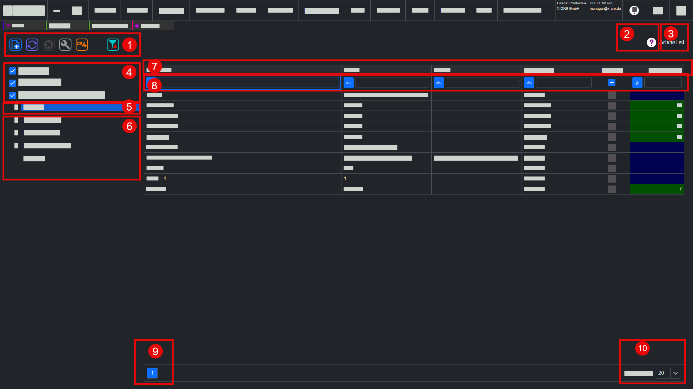

ListView
Einordnung
X-ERP Hilfe > Grundlagen > ListView
Die ListView ist die zentrale Tabellenansicht in X-ERP. Sie zeigt Datensätze als Liste, macht große Datenmengen durch Suche und Filter beherrschbar und ist meist der Einstiegspunkt, um Datensätze zu suchen, zu prüfen, neu anzulegen oder zur Bearbeitung zu öffnen.

1) ListView-Toolbar
Die ListView-Toolbar bündelt die wichtigsten Aktionen der Liste. Typische Funktionen sind Neu, Aktualisieren, Löschen, Spalteneinstellungen, Export, Druck oder weitere kontextabhängige Befehle. Welche Schaltflächen sichtbar sind, hängt von Liste, Berechtigung und Aufgabe ab.
2) Online-Hilfe zur ListView
Die Online-Hilfe öffnet die passende Hilfeseite zur aktuellen ListView. Sie erklärt, wozu die Liste dient, welche Felder wichtig sind und wie typische Arbeitsschritte in diesem Bereich ausgeführt werden.
3) Name der aktuellen ListView
Der Name der aktuellen ListView zeigt, in welcher Liste Sie sich befinden. Das ist besonders hilfreich, wenn mehrere Listen ähnlich aufgebaut sind oder aus verschiedenen Modulen heraus geöffnet werden.
4) Vorfilter
Der Vorfilter grenzt die Daten bereits vor der Anzeige auf eine sinnvolle Teilmenge ein. Er kann zum Beispiel aktive Datensätze, offene Vorgänge oder einen bestimmten fachlichen Bereich anzeigen und lässt sich mit weiteren Filtern kombinieren.
5) Haupt-Suchbaum
Der Haupt-Suchbaum strukturiert die Liste hierarchisch. Über ihn wählen Sie zum Beispiel Gruppen, Kategorien, Ordner oder andere Hauptbereiche aus und reduzieren die angezeigten Datensätze auf den ausgewählten Zweig.
6) Neben-Suchbäume
Neben-Suchbäume ergänzen den Haupt-Suchbaum um weitere fachliche Sichten. Sie können zusätzliche Merkmale wie Status, Bereiche, Zuordnungen oder andere Gruppierungen anbieten. Dadurch lassen sich Listen aus mehreren Blickwinkeln eingrenzen.
7) Spaltenüberschriften
Spaltenüberschriften benennen die angezeigten Informationen. Ein Klick auf eine Spaltenüberschrift sortiert die Liste nach dieser Spalte, sofern die Sortierung für die Spalte vorgesehen ist.
8) Spaltenfilter
Spaltenfilter filtern direkt innerhalb einer einzelnen Spalte. Je nach Datentyp können Texte, Zahlen, Datumswerte, Auswahlwerte oder Vergleichsoperatoren verwendet werden. Die Filter wirken zusammen mit Vorfilter und Suchbaum.
9) Seitenzahl
Die Seitenzahl zeigt, auf welcher Seite der Ergebnisliste Sie sich befinden. Bei umfangreichen Listen können Sie vor- und zurückblättern oder gezielt zu einer anderen Seite wechseln.
10) Datensätze pro Seite
Mit der Anzahl der Datensätze pro Seite steuern Sie, wie viele Zeilen gleichzeitig geladen und angezeigt werden. Eine kleinere Anzahl erhöht die Übersichtlichkeit, eine größere Anzahl erleichtert den Vergleich vieler Datensätze.
11) Eingabe-Tipps
In einer ListView kann der Anwender nach dem Filtern schnell mit der Tastatur weiterarbeiten. Wenn ein Listenfilter aktiv ist und die Ergebnisliste passende Datensätze enthält, wählt die Taste Enter die erste Zeile der Liste aus. Dadurch kann der Anwender nach einer Suche direkt mit dem gefundenen Datensatz weiterarbeiten, ohne zuerst mit der Maus in die Tabelle klicken zu müssen.